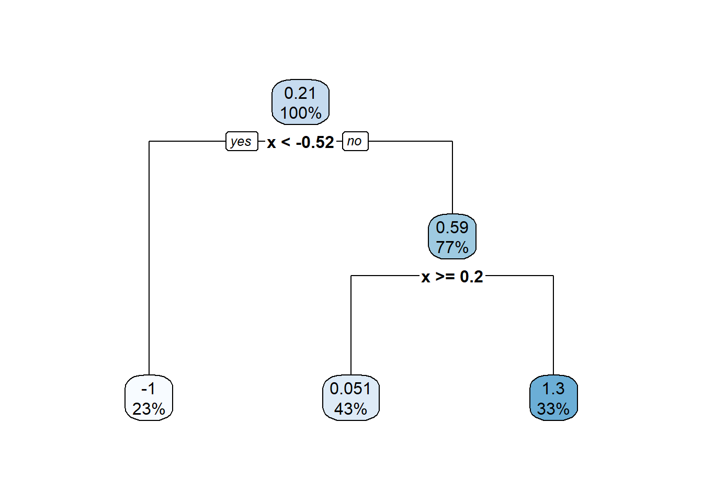

library(tibble) # data frame printing
library(dplyr) # data manipulation
library(caret) # fitting knn
library(rpart) # fitting trees
library(rpart.plot) # plotting trees
library(knitr) # creating tables
library(kableExtra) # styling tablesNonparametric Regression
Required Reading
- This page.
Guiding Ideas
- How to use k-nearest neighbors for regression through the use of the
knnreg()function from thecaretpackage - How to use decision trees for regression through the use of the
rpart()function from therpartpackage. - How “making predictions” can be thought of as estimating the regression function, that is, the conditional mean of the response given values of the features.
- The difference between parametric and nonparametric methods.
- The difference between model parameters and tuning parameters methods.
- How these nonparametric methods deal with categorical variables and interactions.
- What is model flexibility?
- What is overfitting and how do we avoid it?
Nonparametric Regression
In the next weeks, we will continue to explore models for making predictions, but now we will introduce nonparametric models that will contrast the parametric models that we have used previously.
R Setup
Mathematical Setup
Let’s return to the setup we defined in the previous lectures. Consider a random variable \(Y\) which represents a response variable, and \(p\) feature variables \(\boldsymbol{X} = (X_1, X_2, \ldots, X_p)\). We assume that the response variable \(Y\) is some function of the features, plus some random noise.
\[ Y = f(\boldsymbol{X}) + \epsilon \]
Our goal is to find some \(f\) such that \(f(\boldsymbol{X})\) is close to \(Y\). More specifically we want to minimize the risk under squared error loss.
\[ \mathbb{E}_{\boldsymbol{X}, Y} \left[ (Y - f(\boldsymbol{X})) ^ 2 \right] = \mathbb{E}_{\boldsymbol{X}} \mathbb{E}_{Y \mid \boldsymbol{X}} \left[ ( Y - f(\boldsymbol{X}) ) ^ 2 \mid \boldsymbol{X} = \boldsymbol{x} \right] \]
We saw previously (see the slides from last two content days) that this risk is minimized by the conditional mean of \(Y\) given \(\boldsymbol{X}\),
\[ \mu(\boldsymbol{x}) \triangleq \mathbb{E}[Y \mid \boldsymbol{X} = \boldsymbol{x}] \]
which we call the regression function.
Our goal then is to estimate this regression function. Let’s use an example where we know the true probability model:
\[ Y = 1 - 2x - 3x ^ 2 + 5x ^ 3 + \epsilon \]
where \(\epsilon \sim \text{N}(0, \sigma^2)\).
Recall that this implies that the regression function is
\[ \mu(x) = \mathbb{E}[Y \mid \boldsymbol{X} = \boldsymbol{x}] = 1 - 2x - 3x ^ 2 + 5x ^ 3 \]
Let’s also pretend that we do not actually know this information, but instead have some data, \((x_i, y_i)\) for \(i = 1, 2, \ldots, n\).
We simulate enough data to make the “pattern” clear-ish to recognize.
When we use a linear model, we first need to make an assumption about the form of the regression function.
For example, we could assume that
\[ \mu(x) = \mathbb{E}[Y \mid \boldsymbol{X} = \boldsymbol{x}] = \beta_0 + \beta_1 x + \beta_2 x^2 + \beta_3 x^3 \]
which is fit in R using the lm() function
lm(y ~ x + I(x ^ 2) + I(x ^ 3), data = sim_slr_data)
Call:
lm(formula = y ~ x + I(x^2) + I(x^3), data = sim_slr_data)
Coefficients:
(Intercept) x I(x^2) I(x^3)
0.8397 -2.7257 -2.3752 6.0906 Notice that what is returned are (maximum likelihood or least squares) estimates of the unknown \(\beta\) coefficients. That is, the “learning” that takes place with a linear models is “learning” the values of the coefficients.
For this reason, we call linear regression models parametric models. They have unknown model parameters, in this case the \(\beta\) coefficients that must be learned from the data. The form of the regression function is assumed.
What if we don’t want to make an assumption about the form of the regression function? While in this case, you might look at the plot and arrive at a reasonable guess of assuming a third order polynomial, what if it isn’t so clear? What if you have 100 features? Making strong assumptions might not work well.
Enter nonparametric models. We will consider two examples: k-nearest neighbors and decision trees.
k-Nearest Neighbors
We’ll start with k-nearest neighbors which is possibly a more intuitive procedure than linear models.1
If our goal is to estimate the mean function,
\[ \mu(x) = \mathbb{E}[Y \mid \boldsymbol{X} = \boldsymbol{x}] \]
the most natural approach would be to use
\[ \text{average}(\{ y_i : x_i = x \}). \]
That is, to estimate the conditional mean at \(x\), average the \(y_i\) values for each data point where \(x_i = x\).
While this sounds nice, it has an obvious flaw. For most values of \(x\) there will not be any \(x_i\) in the data where \(x_i = x\)!
So what’s the next best thing? Pick values of \(x_i\) that are “close” to \(x\).
\[ \text{average}( \{ y_i : x_i \text{ equal to (or very close to) x} \} ). \]
This is the main idea behind many nonparametric approaches. The details often just amount to very specifically defining what “close” means.
In the case of k-nearest neighbors we use
\[ \hat{\mu}_k(x) = \frac{1}{k} \sum_{ \{i \ : \ x_i \in \mathcal{N}_k(x, \mathcal{D}) \} } y_i \]
as our estimate of the regression function at \(x\). While this looks complicated, it is actually very simple. Here, we are using an average of the \(y_i\) values of for the \(k\) nearest neighbors to \(x\).
The \(k\) “nearest” neighbors are the \(k\) data points \((x_i, y_i)\) that have \(x_i\) values that are nearest to \(x\). We can define “nearest” using any distance we like, but unless otherwise noted, we are referring to euclidean distance.2 We are using the notation \(\{i \ : \ x_i \in \mathcal{N}_k(x, \mathcal{D}) \}\) to define the \(k\) observations that have \(x_i\) values that are nearest to the value \(x\) in a dataset \(\mathcal{D}\), in other words, the \(k\) nearest neighbors.
The plots below begin to illustrate this idea.
- In the left plot, to estimate the mean of \(Y\) at \(x = -0.5\) we use the three nearest neighbors, which are highlighted with green. Our estimate is the average of the \(y_i\) values of these three points indicated by the black x.
- In the middle plot, to estimate the mean of \(Y\) at \(x = 0\) we use the five nearest neighbors, which are highlighted with green. Our estimate is the average of the \(y_i\) values of these five points indicated by the black x.
- In the right plot, to estimate the mean of \(Y\) at \(x = 0.75\) we use the nine nearest neighbors, which are highlighted with green. Our estimate is the average of the \(y_i\) values of these nine points indicated by the black x.
You might begin to notice a bit of an issue here. We have to do a new calculation each time we want to estimate the regression function at a different value of \(x\)! For this reason, k-nearest neighbors is often said to be “fast to train” and “slow to predict.” Training, is instant. You just memorize the data! Prediction involves finding the distance between the \(x\) considered and all \(x_i\) in the data!3
So, how then, do we choose the value of the tuning parameter \(k\)? We validate!
First, let’s take a look at what happens with this data if we consider three different values of \(k\).

For each plot, the black dashed curve is the true mean function.
- In the left plot we use \(k = 25\). The red “curve” is the estimate of the mean function for each \(x\) shown in the plot.
- In the left plot we use \(k = 5\). The blue “curve” is the estimate of the mean function for each \(x\) shown in the plot.
- In the left plot we use \(k = 1\). The green “curve” is the estimate of the mean function for each \(x\) shown in the plot.
Some things to notice here:
- The left plot with \(k = 25\) is performing poorly. The estimated “curve” does not “move” enough. This is an example of an inflexible model.
- The right plot with \(k = 1\) might not perform too well. The estimated “curve” seems to “move” too much. (Notice, that it goes through each point. We’ve fit to the noise.) This is an example of a flexible model.
While the middle plot with \(k = 5\) is not “perfect” it seems to roughly capture the “motion” of the true regression function. We can begin to see that if we generated new data, this estimated regression function would perform better than the other two.
But remember, in practice, we won’t know the true regression function, so we will need to determine how our model performs using only the available data!
This \(k\), the number of neighbors, is an example of a tuning parameter. Instead of being learned from the data, like model parameters such as the \(\beta\) coefficients in linear regression, a tuning parameter tells us how to learn from data. It is user-specified. To determine the value of \(k\) that should be used, many models are fit to the estimation data, then evaluated on the validation. Using the information from the validation data, a value of \(k\) is chosen. (More on this in a bit.)
- Model parameters are “learned” using the same data that was used to fit the model.
- Tuning parameters are “chosen” using data not used to fit the model.
This tuning parameter \(k\) also defines the flexibility of the model and plays a similar role as complexity, or the number of parameters, did in our linear regressions. In KNN, a small value of \(k\) is a flexible model, while a large value of \(k\) is inflexible.4
Before moving to an example of tuning a KNN model, we will first introduce decision trees.
Decision Trees
Decision trees are similar to k-nearest neighbors but instead of looking for neighbors, decision trees create neighborhoods. We won’t explore the full details of trees, but just start to understand the basic concepts, as well as learn to fit them in R.
Neighborhoods are created via recursive binary partitions. In simpler terms, pick a feature and a possible cutoff value. Data that have a value less than the cutoff for the selected feature are in one neighborhood (the left) and data that have a value greater than the cutoff are in another (the right). Within these two neighborhoods, repeat this procedure until a stopping rule is satisfied. To make a prediction, check which neighborhood a new piece of data would belong to and predict the average of the \(y_i\) values of data in that neighborhood.
With the data above, which has a single feature \(x\), consider three possible cutoffs: -0.5, 0.0, and 0.75.

For each plot, the black vertical line defines the neighborhoods. The green horizontal lines are the average of the \(y_i\) values for the points in the left neighborhood. The red horizontal lines are the average of the \(y_i\) values for the points in the right neighborhood.
What makes a cutoff good? Large differences in the average \(y_i\) between the two neighborhoods. More formally we want to find a cutoff value that minimizes
\[ \sum_{i \in N_L} \left( y_i - \hat{\mu}_{N_L} \right) ^ 2 + \sum_{i \in N_R} \left(y_i - \hat{\mu}_{N_R} \right) ^ 2 \]
where
- \(N_L\) are the data in the left neighborhood, that is \(x < c\)
- \(N_R\) are the data in the right neighborhood, that is \(x > c\)
- \(\hat{\mu}_{N_L}\) is the mean of the \(y_i\) for data in the left neighborhood
- \(\hat{\mu}_{N_R}\) is the mean of the \(y_i\) for data in the right neighborhood
This quantity is the sum of two sum of squared errors, one for the left neighborhood, and one for the right neighborhood.
| Cutoff | Total SSE | Left SSE | Right SSE |
|---|---|---|---|
| -0.50 | 45.02 | 21.28 | 23.74 |
| 0.00 | 58.94 | 44.68 | 14.26 |
| 0.75 | 56.71 | 55.46 | 1.25 |
The table above summarizes the results of the three potential splits. We see that (of the splits considered, which are not exhaustive5) the split based on a cutoff of \(x = -0.50\) creates the best partitioning of the space.
Now let’s consider building a full tree.

In the plot above, the true regression function is the dashed black curve, and the solid orange curve is the estimated regression function using a decision tree. We see that there are two splits, which we can visualize as a tree.

The above “tree”6 shows the splits that were made. It informs us of the variable used, the cutoff value, and some summary of the resulting neighborhood. In “tree” terminology the resulting neighborhoods are “terminal nodes” of the tree. In contrast, “internal nodes” are neighborhoods that are created, but then further split.
The “root node” is the neighborhood contains all observations, before any splitting, and can be seen at the top of the image above. We see that this node represents 100% of the data. The other number, 0.21, is the mean of the response variable, in this case, \(y_i\).
Looking at a terminal node, for example the bottom left node, we see that 23% of the data is in this node. The average value of the \(y_i\) in this node is -1, which can be seen in the plot above.
We also see that the first split is based on the \(x\) variable, and a cutoff of \(x = -0.52\). Note that because there is only one variable here, all splits are based on \(x\), but in the future, we will have multiple features that can be split and neighborhoods will no longer be one-dimensional. However, this is hard to plot.
Let’s build a bigger, more flexible tree.
There are two tuning parameters at play here which we will call by their names in R which we will see soon:
cpor the “complexity parameter” as it is called.7 This parameter determines which splits are accepted. A split must improve the performance of the tree by more thancpin order to be used. When we get to R, we will see that the default value is 0.1.minsplit, the minimum number of observations in a node (neighborhood) in order to consider splitting within a neighborhood.
There are actually many more possible tuning parameters for trees, possibly differing depending on who wrote the code you’re using. We will limit discussion to these two.8 Note that they effect each other, and they effect other parameters which we are not discussing. The main takeaway should be how they effect model flexibility.
First let’s look at what happens for a fixed minsplit by variable cp.
We see that as cp decreases, model flexibility increases. We see more splits, because the increase in performance needed to accept a split is smaller as cp is reduced.
Now the reverse, fix cp and vary minsplit.
We see that as minsplit decreases, model flexibility increases. By allowing splits of neighborhoods with fewer observations, we obtain more splits, which results in a more flexible model.
Example: Credit Card Data
Example KNN: Credit Card Data
# load data, coerce to tibble
crdt = as_tibble(ISLR::Credit)Again, we are using the Credit data form the ISLR package. Note: this is not real data. It has been simulated.
# data prep
crdt = crdt %>%
select(-ID) %>%
select(-Rating, everything())We remove the ID variable as it should have no predictive power. We also move the Rating variable to the last column with a clever dplyr trick. This is in no way necessary, but is useful in creating some plots.
# test-train split
set.seed(1)
crdt_trn_idx = sample(nrow(crdt), size = 0.8 * nrow(crdt))
crdt_trn = crdt[crdt_trn_idx, ]
crdt_tst = crdt[-crdt_trn_idx, ]After train-test (with 80% of the data) and estimation-validation splitting the data, we look at the train data.
# check data
head(crdt_trn, n = 10)# A tibble: 10 × 11
Income Limit Cards Age Education Gender Student Married Ethnicity Balance
<dbl> <int> <int> <int> <int> <fct> <fct> <fct> <fct> <int>
1 183. 13913 4 98 17 " Male" No Yes Caucasian 1999
2 35.7 2880 2 35 15 " Male" No No African … 0
3 123. 8376 2 89 17 " Male" Yes No African … 1259
4 20.8 2672 1 70 18 "Female" No No African … 0
5 39.1 5565 4 48 18 "Female" No Yes Caucasian 772
6 36.5 3806 2 52 13 " Male" No No African … 188
7 45.1 3762 3 80 8 " Male" No Yes Caucasian 70
8 43.5 2906 4 69 11 " Male" No No Caucasian 0
9 23.1 3476 2 50 15 "Female" No No Caucasian 209
10 53.2 4943 2 46 16 "Female" No Yes Asian 382
# ℹ 1 more variable: Rating <int>In this simulated data, we would like to predict the Rating variable. For now, let’s try to use only demographic information as predictors.9 In particular, let’s focus on Age (numeric), Gender (categorical), and Student (categorical).
Let’s fit KNN models with these features, and various values of \(k\). To do so, we use the knnreg() function from the caret package.10 Use ?knnreg for documentation and details.
crdt_knn_01 = knnreg(Rating ~ Age + Gender + Student, data = crdt_trn, k = 1)
crdt_knn_10 = knnreg(Rating ~ Age + Gender + Student, data = crdt_trn, k = 10)
crdt_knn_25 = knnreg(Rating ~ Age + Gender + Student, data = crdt_trn, k = 25)
crdt_knn_100= knnreg(Rating ~ Age + Gender + Student, data = crdt_trn, k = 75)Here, we fit three models to the estimation data. We supply the variables that will be used as features as we would with lm(). We also specify how many neighbors to consider via the k argument.
But wait a second, what is the distance from non-student to student? From male to female? In other words, how does KNN handle categorical variables? It doesn’t! Like lm() it creates dummy variables under the hood.
Note: To this point, and until we specify otherwise, we will always coerce categorical variables to be factor variables in R. We will then let modeling functions such as lm() or knnreg() deal with the creation of dummy variables internally.
head(crdt_knn_10$learn$X) Age GenderFemale StudentYes
1 98 0 0
2 35 0 0
3 89 0 1
4 70 1 0
5 48 1 0
6 52 0 0Once these dummy variables have been created, we have a numeric \(X\) matrix, which makes distance calculations easy.11 For example, the distance between the 3rd and 4th observation here is 19.053.
dist(head(crdt_knn_10$learn$X)) 1 2 3 4 5
2 63.000000
3 9.055385 54.009258
4 28.017851 35.014283 19.052559
5 50.009999 13.038405 41.024383 22.000000
6 46.000000 17.000000 37.013511 18.027756 4.123106sqrt(sum((crdt_knn_10$learn$X[3, ] - crdt_knn_10$learn$X[4, ]) ^ 2))[1] 19.05256What about interactions? Basically, you’d have to create them the same way as you do for linear models. We only mention this to contrast with trees in a bit.
OK, so of these three models, which one performs best? (Where for now, “best” is obtaining the lowest validation RMSE.)
First, note that we return to the predict() function as we did with lm().
predict(crdt_knn_10, crdt_tst[1:5, ])[1] 334.9091 346.0000 459.3333 342.0909 450.8000This uses the 10-NN (10 nearest neighbors) model to make predictions (estimate the regression function) given the first five observations of the validation data. Note: We did not name the second argument to predict(). Again, you’ve been warned.
Now that we know how to use the predict() function, let’s calculate the validation RMSE for each of these models.
knn_mod_list = list(
crdt_knn_01 = knnreg(Rating ~ Age + Gender + Student, data = crdt_trn, k = 1),
crdt_knn_10 = knnreg(Rating ~ Age + Gender + Student, data = crdt_trn, k = 10),
crdt_knn_25 = knnreg(Rating ~ Age + Gender + Student, data = crdt_trn, k = 25),
crdt_knn_100= knnreg(Rating ~ Age + Gender + Student, data = crdt_trn, k = 75)
)knn_tst_pred = lapply(knn_mod_list, predict, crdt_tst)calc_rmse = function(actual, predicted) {
sqrt(mean((actual - predicted) ^ 2))
}sapply(knn_tst_pred, calc_rmse, crdt_tst$Rating) crdt_knn_01 crdt_knn_10 crdt_knn_25 crdt_knn_100
163.9868 142.2242 135.3838 142.6786 So, of these three values of \(k\), the model with \(k = 25\) achieves the lowest validation (test) RMSE.
This process, fitting a number of models with different values of the tuning parameter, in this case \(k\), and then finding the “best” tuning parameter value based on performance on the validation (test) data is called tuning. In practice, we would likely consider more values of \(k\), but this should illustrate the point.
In the next lectures, we will discuss the details of model flexibility and model tuning, and how these concepts are tied together. However, even though we will present some theory behind this relationship, in practice, you must tune and validate your models. There is no theory that will inform you ahead of tuning and validation which model will be the best. By teaching you how to fit KNN models in R and how to calculate validation RMSE, you already have all a set of tools you can use to find a good model.
Tuning isn’t necessarily something we’ve never done before – in our linear regression section, we fit our model using more and more variables (and transformations of those variables), which allowed more flexibility but, as we saw, resulted in over-fitting. The same principle applies to KNN when we allow \(k\) to decrease towards 1.
Example Decision Tree: Credit Card Data
Let’s turn to decision trees which we will fit with the rpart() function from the rpart package. Use ?rpart and ?rpart.control for documentation and details. In particular, ?rpart.control will detail the many tuning parameters of this implementation of decision tree models in R.
set.seed(5)
crdt_trn_idx = sample(nrow(crdt), size = 0.8 * nrow(crdt))
crdt_trn = crdt[crdt_trn_idx, ]
crdt_tst = crdt[-crdt_trn_idx, ]We’ll start by using default tuning parameters for minsplit, but I’m going to use a cp that gets us something interesting.
crdt_tree = rpart(Rating ~ Age + Gender + Student, data = crdt_trn, cp = .0095)crdt_treen= 320
node), split, n, deviance, yval
* denotes terminal node
1) root 320 7045031.0 350.6250
2) Age< 82.5 306 6586876.0 344.8170
4) Age< 35.5 54 471770.1 311.8704 *
5) Age>=35.5 252 6043929.0 351.8770
10) Age>=69.5 68 1571017.0 326.0882
20) Age< 77.5 39 498793.0 287.3590 *
21) Age>=77.5 29 935056.1 378.1724
42) Gender= Male 11 445504.2 316.2727 *
43) Gender=Female 18 421648.0 416.0000 *
11) Age< 69.5 184 4410974.0 361.4076 *
3) Age>=82.5 14 222217.4 477.5714 *Above we see the resulting tree printed, however, this is difficult to read. Instead, we use the rpart.plot() function from the rpart.plot package to better visualize the tree.
rpart.plot(crdt_tree)At each split, the variable used to split is listed together with a condition. If the condition is true for a data point, send it to the left neighborhood. Although the Gender available for creating splits, we only see splits based on Age and Student. This hints at the relative importance of these variables for prediction. More on this much later.
Categorical variables are split based on potential categories! This is excellent. This means that trees naturally handle categorical features without needing to convert to numeric under the hood. We see a split that puts students into one neighborhood, and non-students into another.
Notice that the splits happen in order. So for example, the third terminal node (with an average rating of 316) is based on splits of:
Age < 83Age > 36Age > 70Age > 78Gender = Male
In other words, individuals in this terminal node are students who are between the ages of 78 and 83. (Only 3% of the data is represented here.) This is basically an interaction between Age and Student without any need to directly specify it! What a great feature of trees.
To recap:
- Trees do not make assumptions about the form of the regression function.
- Trees automatically handle categorical features.
- Trees naturally incorporate interaction.
Now let’s fit another tree that is more flexible by relaxing some tuning parameters. Recall that by default, cp = 0.1 and minsplit = 20.
crdt_tree_big = rpart(Rating ~ Age + Gender + Student, data = crdt_trn,
cp = 0.0, minsplit = 20)rpart.plot(crdt_tree_big)
To make the tree even bigger, we could reduce minsplit, but in practice we mostly consider the cp parameter. Since minsplit has been kept the same, but cp was reduced, we see the same splits as the smaller tree, but many additional splits.
Now let’s fit a bunch of trees, with different values of cp, for tuning.
tree_mod_list = list(
crdt_tree_0000 = rpart(Rating ~ Age + Gender + Student, data = crdt_trn, cp = 0.000),
crdt_tree_0001 = rpart(Rating ~ Age + Gender + Student, data = crdt_trn, cp = 0.001),
crdt_tree_0010 = rpart(Rating ~ Age + Gender + Student, data = crdt_trn, cp = 0.010),
crdt_tree_0100 = rpart(Rating ~ Age + Gender + Student, data = crdt_trn, cp = 0.100)
)tree_val_pred = lapply(tree_mod_list, predict, crdt_tst)sapply(tree_val_pred, calc_rmse, crdt_tst$Rating)crdt_tree_0000 crdt_tree_0001 crdt_tree_0010 crdt_tree_0100
182.0236 180.1045 172.6976 177.2816 Here we see the model, with cp = 0.010, performs best.
Note that by only using these three features, we are severely limiting our models performance. Let’s quickly assess using all available predictors.
crdt_tree_all = rpart(Rating ~ ., data = crdt_trn)rpart.plot(crdt_tree_all)Notice that this model only splits based on Limit despite using all features. This should be a big hint about which variables are useful for prediction.
calc_rmse(
actual = crdt_tst$Rating,
predicted = predict(crdt_tree_all, crdt_tst)
)[1] 45.17942This model performs much better. You should try something similar with the KNN models above. Also, consider comparing this result to results from last lectures using linear models.
Notice that we’ve been using that trusty predict() function here again.
predict(crdt_tree_all, crdt_tst[1:5, ]) 1 2 3 4 5
520.7812 645.4000 520.7812 440.7368 520.7812 What does this code do? It estimates the mean Rating given the feature information (the “x” values) from the first five observations from the validation data using a decision tree model with default tuning parameters. Hopefully a theme is emerging.
Footnotes
We chose to start with linear regression because most students the social sciences should already be familiar with the basic notion.↩︎
The usual distance when you hear distance. That is, unless you drive a taxicab.↩︎
For this reason, KNN is often not used in practice, but it is very useful learning tool.↩︎
Many texts use the term complex instead of flexible. We feel this is confusing as complex is often associated with difficult. KNN with \(k = 1\) is actually a very simple model to understand, but it is very flexible as defined here.↩︎
To exhaust all possible splits of a variable, we would need to consider the midpoint between each of the order statistics of the variable. To exhaust all possible splits, we would need to do this for each of the feature variables.↩︎
It’s really an upside tree isn’t it?↩︎
Flexibility parameter would be a better name.↩︎
The
rpartfunction in R would allow us to use others, but we will always just leave their values as the default values.↩︎There is a question of whether or not we should use these variables. For example, should men and women be given different ratings when all other variables are the same? Using the
Gendervariable allows for this to happen. Also, you might think, just don’t use theGendervariable. Unfortunately, it’s not that easy. There is an increasingly popular field of study centered around these ideas called machine learning fairness.↩︎There are many other KNN functions in
R. However, the operation and syntax ofknnreg()better matches other functions we use in this course.↩︎Wait. Doesn’t this sort of create an arbitrary distance between the categories? Why \(0\) and \(1\) and not \(-42\) and \(51\)? Good question. This hints at the notion of pre-processing. We’re going to hold off on this for now, but, often when performing k-nearest neighbors, you should try scaling all of the features to have mean \(0\) and variance \(1\).↩︎